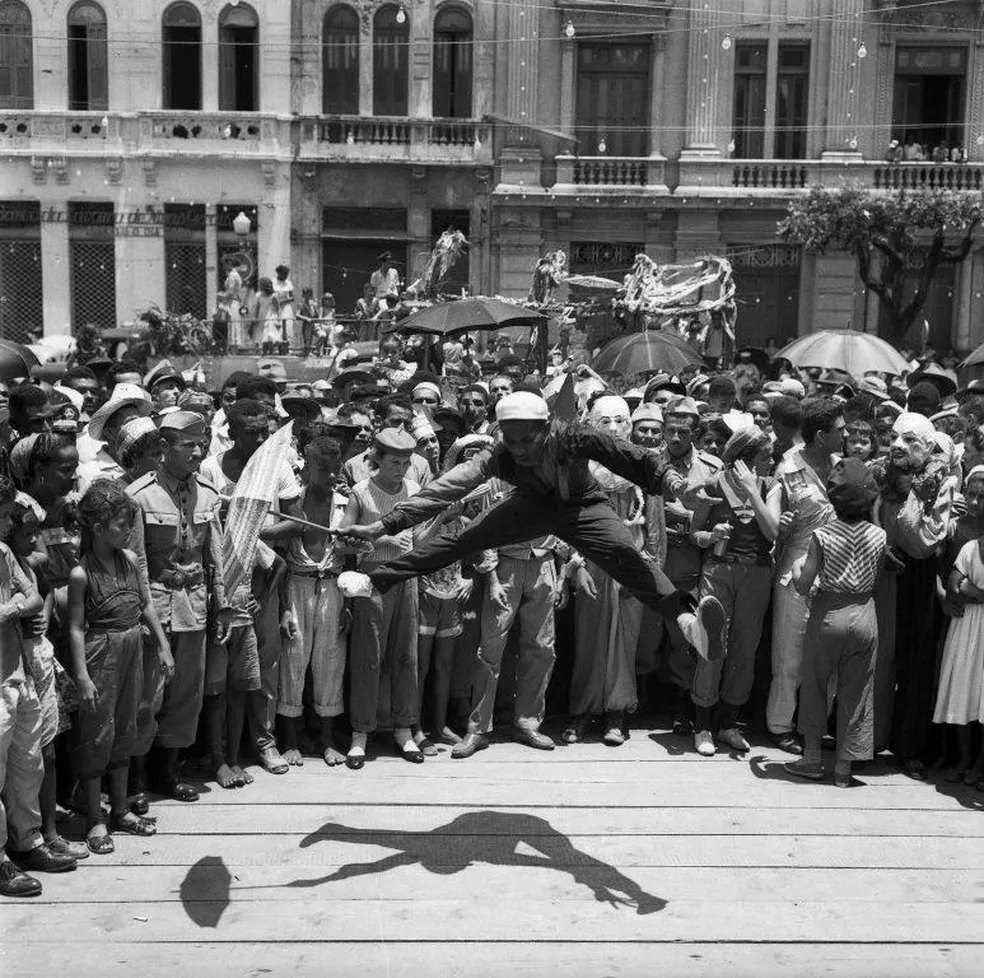
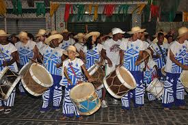
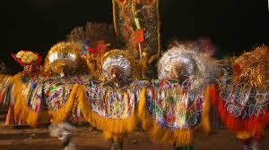
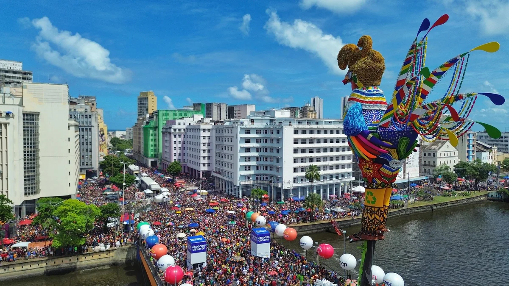
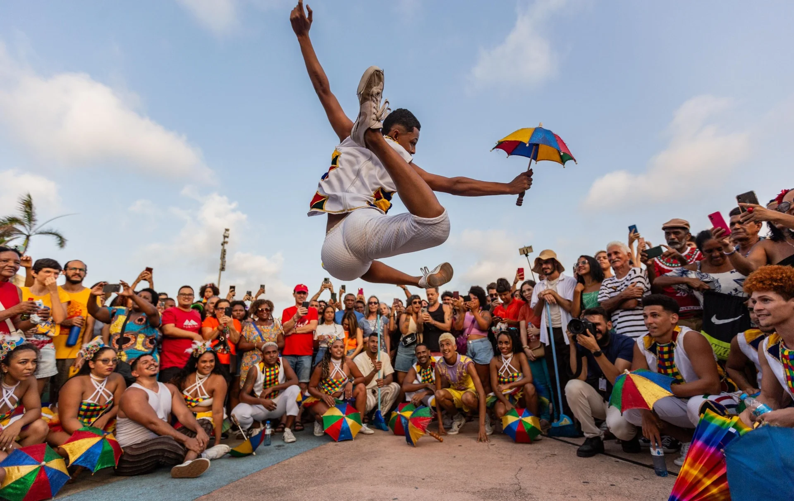
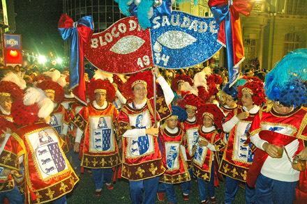

História do Carnaval
No fim do Século XVII havia organizações, denominadas Companhias, que se reuniam para comemorar a Festa de Reis. Essas companhias eram constituídas em sua maioria de pessoas de raça negra, escravos ou não, que suspendiam seus trabalhos e comemoravam o dia dos Santos Reis.
No Século XVIII apareceu o Maracatu Nação, chamado Maracatu de baque virado, que encenava a coroação do Rei Negro, o Rei do Congo. A coroação era realizada na Igreja de Nossa Senhora do Rosário (Igreja do Rosário dos Pretos).
Com a abolição da escravatura, começaram a aparecer agremiações carnavalescas baseadas nos maracatus e nos festejos dos Reis Magos.
Foliões nas ruas do Recife Antigo no Carnaval 2014. O primeiro clube carnavalesco de que se tem notícia foi o Clube dos Caiadores, criado por Antônio Valente. Os participantes do clube compareciam à Matriz de São José, no bairro de São José, executando marchas. Seus participantes, levando nas mãos baldes, latas de tinta, escadinhas e varas com pincéis, subiam os degraus da igreja e a caiavam (pintavam), simbolicamente.
Historia do Maracatu
O Maracatu é uma rica tradição afro-brasileira de Pernambuco, surgida no século XVIII como forma de resistência de pessoas escravizadas, misturando influências africanas, indígenas e portuguesas na música, dança e cortejos reais que celebram a coroação de reis e rainhas congoleses, dividindo-se principalmente em Maracatu de Nação (Baque Virado) e Maracatu Rural (Baque Solto), com figuras como reis, rainhas, calungas e ritmos de percussão marcantes.
Tipos De Maracatu
Maracatu-Nação
O Maracatu Nação ou maracatu de baque virado é um tipo de maracatu, um ritmo musical, dança e ritual de sincretismo religioso com origem no estado de Pernambuco. Trata-se do mais antigo ritmo afro-brasileiro.
É formado por um conjunto musical percussivo que acompanha um cortejo real. Os grupos apresentam um espetáculo repleto de simbologias e marcado pela riqueza estética e pela musicalidade. O momento de maior destaque consiste na saída às ruas para desfiles e apresentações no período carnavalesco.
Maracatu Rural
O Maracatu Rural ou Maracatu de Baque Solto é um tipo de maracatu, uma manifestação folclórica com origem no estado de Pernambuco. Tem como principal símbolo o caboclo de lança, e distingue-se do Maracatu Nação por sua organização, personagens e ritmo.
O Maracatu Rural significa para seus integrantes algo a mais que uma brincadeira: é uma herança secular, motivo de muito orgulho e admiração. É formado por pessoas simples, principalmente por trabalhadores rurais que com as mesmas mãos que cortam cana, lavram a terra e carregam peso, também bordam golas de caboclo, cortam fantasias, enfeitam guiadas, relhos e chapéus; dedicando-se ao bem mais valioso que possuem: a cultura.
O Galo Da Madrugada
O Galo da Madrugada OMC é um tradicional bloco carnavalesco, considerado o maior do mundo, que desfila durante o carnaval do Recife, saindo no sábado de carnaval e marcando a abertura do mesmo. Desde o seu desfile inaugural, o Galo, como também é conhecido, ganhou enorme adesão de foliões desfile após desfile, e desde 1994, passou a ser considerado o maior bloco de carnaval do mundo, segundo o Guinness World Records. Todo ano, dezenas de trios elétricos, arrastam os foliões da capital pernambucana.
Origem
No intuito de reviver os antigos carnavais de rua, um grupo de amigos, liderados por Enéas Freire, criaram no final de 1977, o Clube de Máscaras O Galo da Madrugada, que teve o seu primeiro desfile no dia 23 de janeiro de 1978, às 5h da madrugada nas ruas do bairro de São José, no Recife, e reunindo 75 foliões. Em 1979, o número de foliões subiu para 350, número que continuou a crescer nos anos seguintes. Em 1991, o número de foliões ultrapassava um milhão.
A década de 1990 assistiu ao crescimento da agremiação, que tomou proporções gigantescas[19] e em 1994, o bloco foi oficialmente colocado no livro dos Recordes como o maior do mundo, o seu público continuou a aumentar e atingiu a marca dos dois milhões de foliões nos anos 2010.
Em 2009, o bloco foi consagrado como Patrimônio Cultural Imaterial do Estado de Pernambuco, por meio de lei aprovada na Assembleia Legislativa de Pernambuco e sancionada pelo Governador do Estado.
O Frevo
O frevo é um ritmo musical e uma dança brasileira com origem no estado de Pernambuco. Sua música baseia-se na fusão de gêneros como marcha, maxixe, dobrado e polca, e sua dança foi influenciada pela capoeira.
Foi declarado Patrimônio Imaterial da Humanidade pela UNESCO no ano de 2012, sob a designação "Frevo: Arte do Espetáculo do Carnaval do Recife".
Surgido em Pernambuco no fim do século XIX, o frevo caracteriza-se pelo ritmo extremamente acelerado. Muito executado durante o carnaval, eram comuns conflitos entre blocos de frevo, em que capoeiristas saíam à frente dos seus blocos para intimidar blocos rivais e proteger seu grupo.
O frevo é uma criação de compositores de música ligeira, feita para o carnaval para proporcionar mais animação nos folguedos. Com o decorrer do tempo, o frevo ganhou características próprias.
Tipos de Frevo
Frevo-de-Rua
Puramente instrumental, é a trilha sonora dos passistas. Tocado por fanfarras com metais, saxofones e trombones, é energia pura que embala as acrobacias dos dançarinos.

Frevo-Canção
Combina a introdução orquestral do frevo-de-rua com uma parte cantada. Traz emoção em música com letras que frequentemente falam do cotidiano e da cultura pernambucana.

Frevo-de-Bloco
Mais lento e lírico, é tocado por orquestras de pau e corda. É o estilo dos blocos de frevo que desfilam com cantores e coro feminino, trazendo poesia em movimento.
